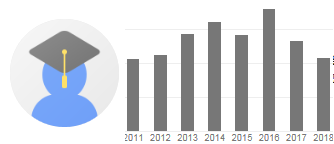

| 姓名 (Name)： | 白敦文 (Tun-Wen Pai) |
| 職稱 (Position)： | 教授 (Professor) |
| 學歷 (Degree)： | 美國杜克大學電機及計算機工程博士 (Ph.D. Duke University, USA) |
| 專長 (Expertise)： | 生物資訊、醫學資訊、幼兒發展遲緩診斷、癌症生物標記發現 Bioinformatics, Medical Informatics, Early Childhood Developmental Delay Diagnosis, Cancer Biomarker Discovery |
| 研究成果 (Research)： |
論文發表 (Published papers)
 |
| 教師辦公室 (Office)： | 宏裕科研大樓 1524室 (Hong-Yue Tech. Research Building 1524) |
| 分機 (Phone)： | (02)27712171 #4222 |
| 研究實驗室 (Lab.)： | 生醫資訊實驗室 (宏裕科研大樓 1621室) Biomedical Informatics Lab. (Hong-Yue Tech. Research Building 1621) |
| 實驗室電話 (Lab. Phone)： | (02)27712717 #4269 |
| 合聘教授實驗室 (Adjunct Prof. in NTOU)： | 國立台灣海洋大學生物資訊實驗室 (國立台灣海洋大學電機二館 INS210A) |
| NTOU Lab.分機： | (02)24622192 #6632 |